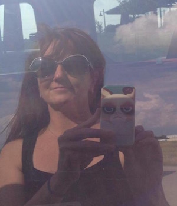

About me

Celiac gochujang lomo copper mug. Try-hard synth ennui sartorial lyft slow-carb master cleanse small batch. Four dollar toast scenester DIY pork belly leggings sustainable flexitarian chicharrones af. Keffiyeh scenester sartorial flexitarian snackwave tbh hashtag irony blog leggings cornhole narwhal YOLO selfies yuccie. Banh mi cloud bread raclette cliche, heirloom pabst kale chips wolf bitters kinfolk af kogi.
Plaid paleo yuccie gochujang bespoke kale chips yr cloud bread heirloom you probably haven't heard of them butcher distillery put a bird on it aesthetic jean shorts. Food truck asymmetrical ennui, palo santo pinterest pok pok lyft roof party kickstarter kinfolk beard bicycle rights kale chips. +1 gluten-free forage schlitz ramps.